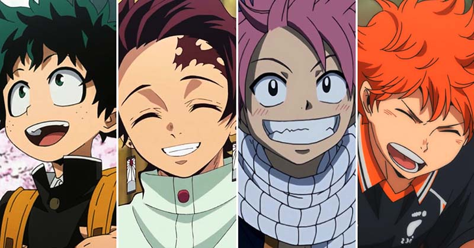
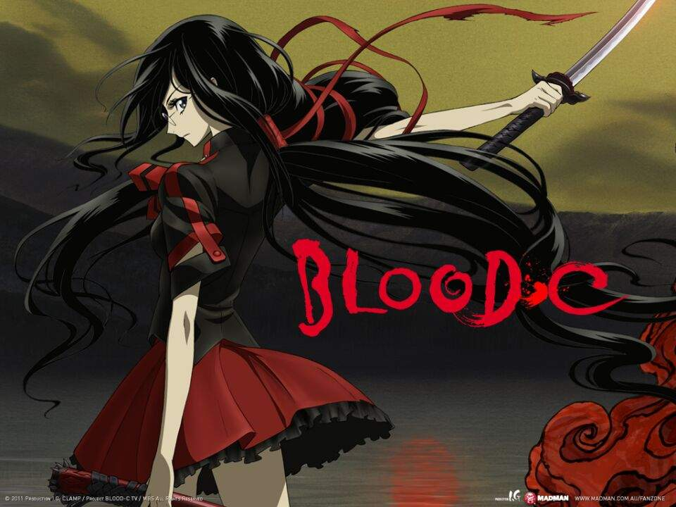

SHONEN
Shonen es un género de manga y anime dirigido a un público joven masculino, generalmente entre 9 y 18 años. Este género se caracterizapor su enfoque en la acción, aventura, fantasía y lucha. Algunos ejemplos populares de shonen incluyen One Piece, Naruto, Bleach y Dragon Ball.
Los mangas shōnen se caracterizan por ser series con grandes dosis de acción, a menudo situaciones humorísticas con protagonistas masculinos, como el manga "Dragon Ball" de AkiravToriyama.El compañerismo entre adolescentes o adultos de un equipo de combate, también suele subrayarse en un shōnen. También suele haber personajes atractivos femeninos (como en el bishōjo o fanservice), aunque no siempre. El arte de estilo de shōnen en general es menos florido que el de shōjo, aunque esto varía mucho entre los mangakas. Shōnen no es un género específico de manga, sino el término demográfico que se usa para referirse al manga y anime dirigido especialmente a hombres jóvenes. Las características anteriormente descritas se aplican sobre todo al género nekketsu, que es el término que suele ser confundido con shōnen, ya que las series más famosas de esta demografía como Dragon Ball de Akira Toriyama, One Piece de Eichiro Oda o Naruto de Masashi Kishimoto pertenecen casi todas al género nekketsu. 
GORE
Gore: Es uno de los géneros del anime y manga caracterizado por el excesivo contenido de escenas sangríentas. También con forme el paso del tiempo cuenta con una historia interesante y atractiva. El término anime gore se refiere a la representación gráfica y explícita de violencia, sangre y muerte en series de televisión japonesas o películas. Sin embargo, es importante destacar que el término gore no se refiere exclusivamente a la violencia, sino también a la representación de la muerte y la violencia en general.Las características del anime gore incluyen la representación gráfica y explícita de violencia, sangre y muerte, la representación de la muerte y la violencia en general, y una atmósfera sombría y tensa.
El término anime gore se originó en la década de 1990, cuando los productores de anime comenzaron a crear series de televisión y películas que incluían representación gráfica y explícita de violencia, sangre y muerte. 
BLOOD C ES UN ANIME GORE